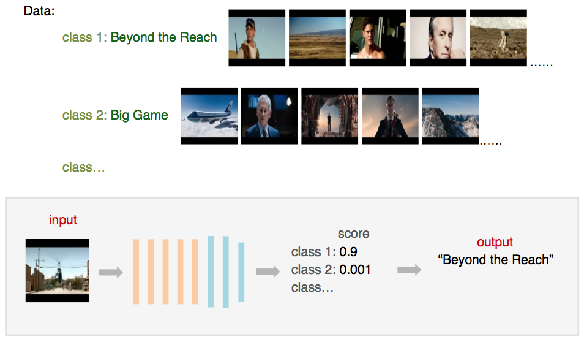
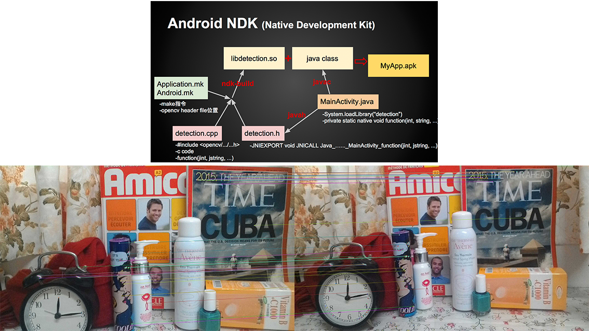
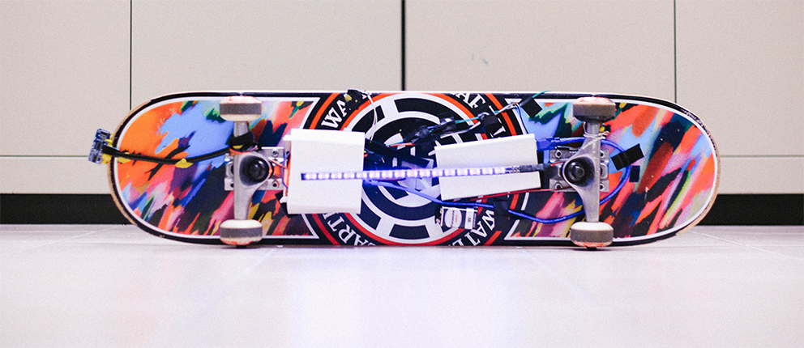

Hello!
I am Ya-Fang Shih, a M.S. student in the Department of Computer Science at National Taiwan University (expected to graduate on Aug. 2017), supervised by Prof. Yung-Yu Chuang. I work as a part-time research assistant at Academia Sinica, supervised by Dr. Yen-Yu Lin. Before these, I received my B.S. degree in the Department of CS at NTU.
My research interests are computer vision and deep learning.

News
One paper is accepted in CVPR 2017!
Publication
Deep Co-occurrence Feature Learning for Visual Object Recognition
Ya-Fang Shih, Yang-Ming Yeh, Yen-Yu Lin, Ming-Fang Weng, Yi-Chang Lu, Yung-Yu Chuang
IEEE Conference on Computer Vision and Pattern Recognition (CVPR), 2017
Project
Stereo Panorama

This system produces stereo panorama image pairs (for left and right eyes) from a hand-held GoPro video. This work focuses on implementing the flow-based image blending method proposed by megastereo by Richardtet al.
Outfit Color Harmony Evaluation System
This outfit evaluation system scores how harmonic the colors of people’s outfit looks. This work focuses on implementing the color harmonization algorithm by Cohen-Or et al.
Distorted Movie Scene Image Classification
This system focuses on improving the classification accuracy of user-specified photos of movie scenes which have heavy lightning and contrast distortion. Developed with MatConvNet.
Image Feature Matching Android Application
This Android application takes photos, detects and matches robust feature points in pictures instantly on mobile devices. This work focuses on implementing feature matching using native language C++ and integrating it into the Java environment on Andriod systems. Developed with Android NDK and OpenCV4Android.
DJ Board
DJBoard is an interactive skateboard that people can mix their own track of music on by performing different board-motions and triggering different sensors. Developed with an infrared sensor, pressure and ultrasonic sensors and a gyroscope on Arduino platform.